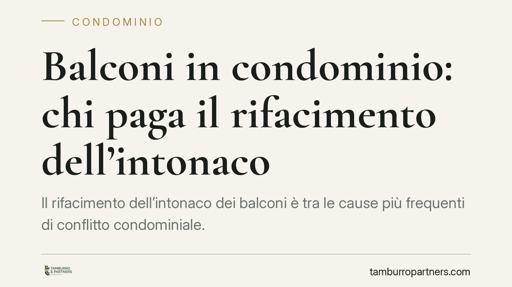

Balconi in condominio: chi paga il rifacimento dell'intonaco
Il rifacimento dell'intonaco dei balconi è tra le cause più frequenti di conflitto condominiale. Una recente pronuncia della Corte d'Appello dell'Aquila distingue con chiarezza tra elementi estetici, la cui spesa grava su tutti i condomini, e componenti a uso esclusivo, a carico del singolo proprietario. Capire questa linea di confine evita contestazioni sul riparto delle spese.

Il caso: estetica del fabbricato o proprietà privata?
I balconi rappresentano una zona grigia del diritto condominiale. Non sono interamente privati, perché incidono sull'aspetto esterno dell'edificio, ma nemmeno pienamente comuni, dato che servono in via esclusiva il singolo appartamento.
La Corte d'Appello dell'Aquila (sentenza n. 806/2021) ha ribadito un principio ormai consolidato: la ripartizione delle spese dipende dalla funzione svolta dalla singola parte del balcone.
Inquadramento normativo
Il riferimento è l'art. 1117 del codice civile, che elenca le parti comuni dell'edificio. La norma non menziona espressamente i balconi, e proprio da questo silenzio nasce la casistica giurisprudenziale.
La distinzione operata dai giudici si fonda su un criterio funzionale. I cosiddetti balconi aggettanti – quelli che sporgono dalla facciata – sono in linea di principio di proprietà esclusiva del titolare dell'appartamento cui accedono. Diversa è la sorte degli elementi che assolvono anche una funzione decorativa dell'intero fabbricato.
Rientrano tra questi ultimi i frontalini (la fascia frontale che chiude il balcone), i rivestimenti e gli elementi ornamentali che contribuiscono al decoro architettonico dell'edificio. Trattandosi di componenti estetiche a beneficio della collettività, la relativa manutenzione grava su tutti i condomini, con riparto secondo i millesimi di proprietà (art. 1123, primo comma, cod. civ.).
Cosa cambia in concreto
La sentenza traccia una linea operativa netta.
A carico di tutti i condomini ricadono i lavori sugli elementi che formano il decoro architettonico: frontalini, cornici, fasce marcapiano, parapetti con valore ornamentale. In questi casi la spesa è condominiale perché l'intervento tutela l'aspetto complessivo dell'edificio.
A carico del singolo proprietario restano invece le componenti a uso esclusivo: la pavimentazione del balcone (calpestio), l'intonaco del soffitto (intradosso) quando non svolge funzione decorativa per il fabbricato, e in generale tutto ciò che serve solo all'appartamento.
La conseguenza pratica è rilevante. Prima di deliberare un intervento o di contestare una spesa, occorre qualificare correttamente la parte oggetto dei lavori. Una delibera che addossa a tutti i condomini il rifacimento di un pavimento privato è impugnabile; allo stesso modo, chi rifiuta di partecipare alla spesa per i frontalini espone il condominio a un contenzioso.
Il ruolo della perizia tecnica
La qualificazione non è sempre immediata. Uno stesso intervento può coinvolgere sia parti private sia elementi decorativi comuni. In questi casi la relazione di un tecnico – che individui quali componenti abbiano valore ornamentale per l'edificio – diventa lo strumento decisivo per un riparto corretto e difendibile.
Consigliamo di allegare tale documentazione al verbale assembleare: rende la delibera più solida in caso di successiva impugnazione.
Cosa fare in concreto
- Verificate la funzione della parte da riparare: distinguete tra elementi puramente estetici (comuni) e componenti a uso esclusivo (private) prima di qualsiasi delibera.
- Acquisite una perizia tecnica quando l'intervento è misto, così da documentare il criterio di riparto adottato.
- Redigete un verbale dettagliato che indichi le voci di spesa comuni e quelle individuali, con il relativo fondamento.
- Controllate il regolamento condominiale: se di natura contrattuale, può contenere criteri di riparto specifici che prevalgono sulla regola generale.
- Valutate l'impugnazione nei termini (30 giorni dalla delibera, art. 1137 cod. civ.) se la ripartizione appare errata, evitando di lasciar decorrere il termine.
La corretta gestione di queste spese non è solo una questione tecnica: incide sui rapporti tra i condomini e sulla tenuta delle delibere assembleari. Un riparto ben motivato riduce il rischio di contenzioso e rende più agevole l'esecuzione dei lavori.
Contributo informativo a cura di Tamburro & Partners - Avv. Giuseppe Tamburro. Non costituisce parere legale.
Ogni condominio ha una storia a sé.
Se gestisci un'amministrazione e vuoi un confronto su una specifica questione condominiale, scrivi allo studio. Ti rispondiamo entro un giorno lavorativo.